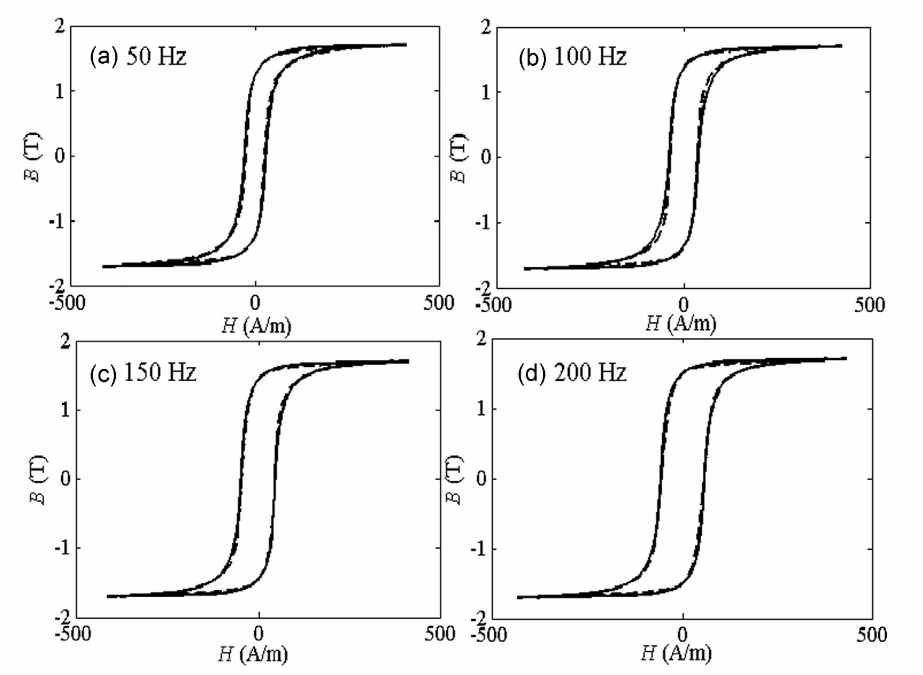
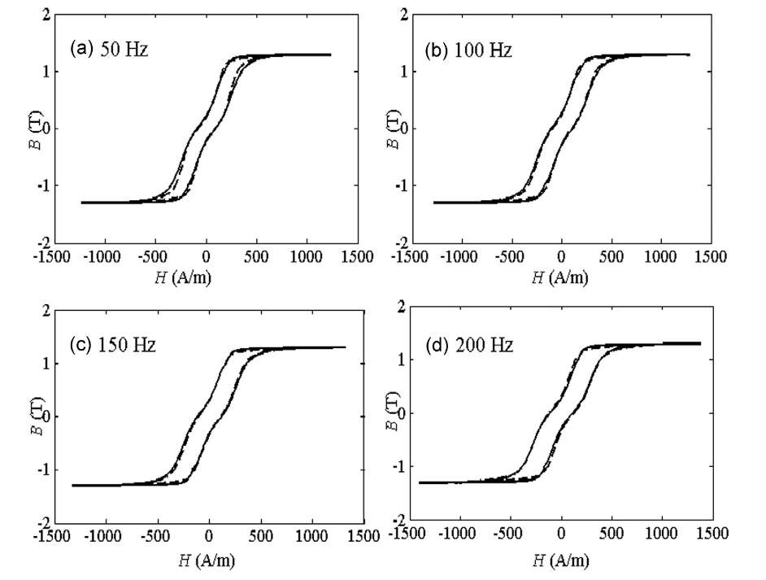

Hysteresis loop modeling in rolling and transverse direction of grain oriented magnetic material
Magnetic properties of grain-oriented materials are affected by hysteresis, anisotropy and dynamic effects. The attempts to describe dynamic hysteresis loops are usually limited to the rolling direction (RD). On the other hand, modelling of magnetic properties for the transverse direction (TD) is important for numerical analysis of core-joints and corner regions in transformers. For this direction, hysteresis loops reveal complex shapes particularly for dynamic magnetization conditions. This paper presents a comprehensive approach for modelling of dynamic hysteresis loops in RD and TD. This work uses the magnetic viscosity-based approach, which is able to describe irregular widening of dynamic loops. The loss separation scheme is also considered for both principal directions. Variations of loss components with frequency for both directions are discussed. The computed dynamic loops in RD and TD are in a close agreement with experimental
Publication
Results

Computed and measured hysteresis loop in rolling direction for different frequencies.

Computed and measured hysteresis loop in transverse direction for different frequencies.